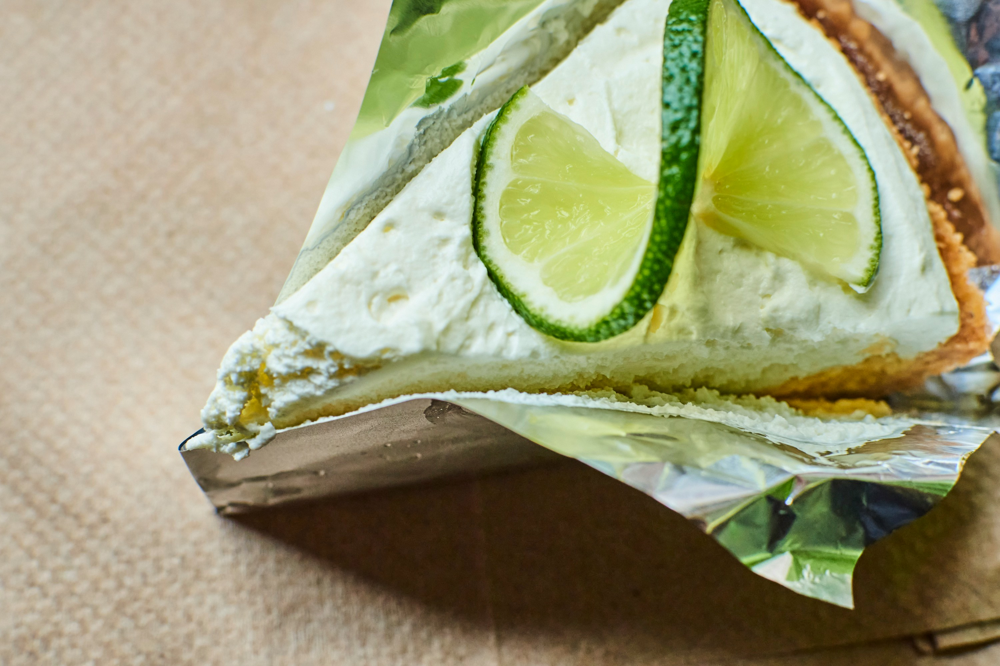
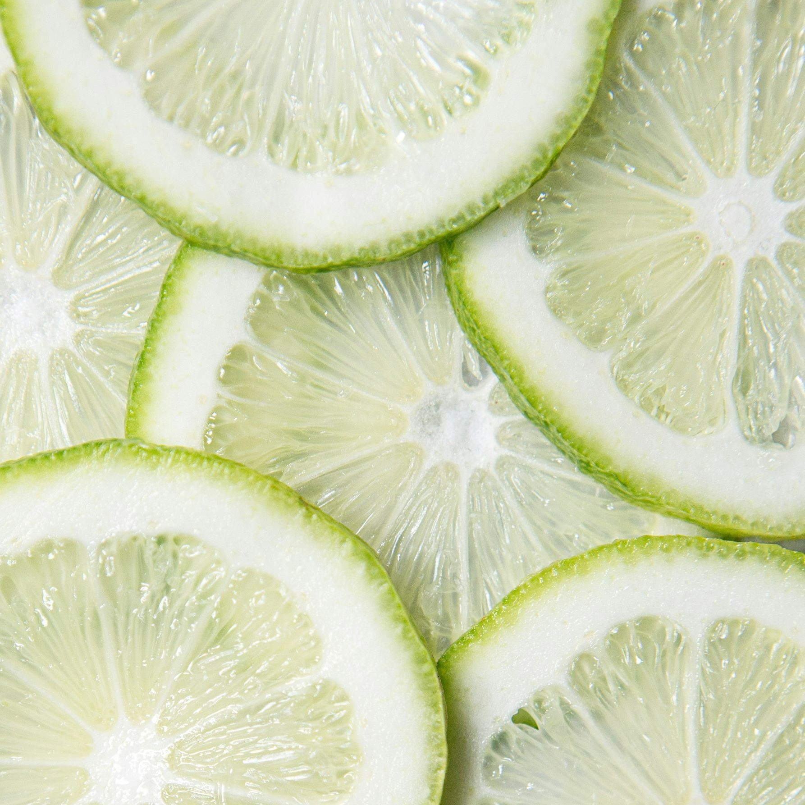

...

Here is an easy 10 step guide on how to make your very own delicious key
lime pie.
/:/~Ingredients (Crust) ~/:/
Half a pound of graham crackers (for the crust)
5 tbsp of unsalted butter (melted)
1/3 cup of sugar
Rolling pin
Plastic bag
Pie tin
/:/~Ingredients (Filling) ~/:/
3 egg yolks
2 tsp lime zest
14oz sweetened condensed milk
2/3 cups of lime juice
Electric mixer
/:/~Ingredients (Topping) ~/:/
1 cup whipped cream
10 half lime slices
2 tbsp confectioners sugar
/:/~Crust Instructions~/:/
- Preheat the oven to 350 F
- Crush the graham crackers in a plastic bag using a rolling pin
-
Put the crackers into a mixer and combine with the sugar and butter
-
Put the mixture into a pie tin, making sure to create a defined border
around the edge
-
Bake the pie crust in the oven for about 8 minutes or until crust is
golden. Set it aside to cool
/:/~Filling Instructions~/:/
-
In an electric mixer, at high speed, beat the lime zest and egg yolks
until fluffy (abt 5 min)
-
Then gradually add the condensed milk and continue until thick (abt 4
min)
-
Lower speed and add lime juice and mix until they are fully combined
- Pour the mixture into the crust and bake for about 10 minutes
-
Leave the pie to cool for about 20 minutes, refrigerate after pie has
cool sufficently
/:/~Topping Instructions~/:/
- Pipe 10 dollops of whip cream in a circle around the pie
- Add sprinkles of sugar on top
- Finaly, poke 1 lime slice standing up onto of the dollops
- Enjoy!
